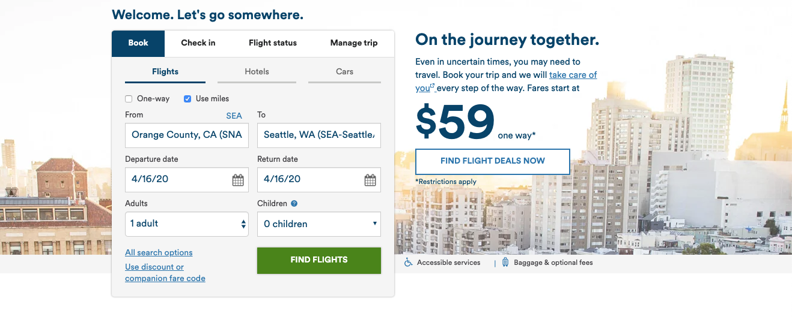
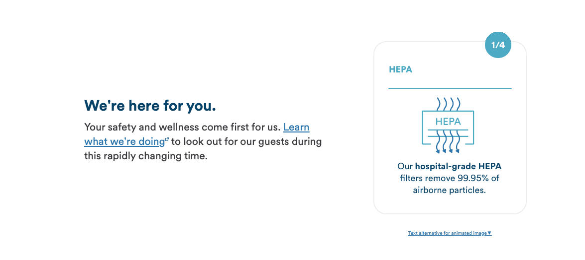
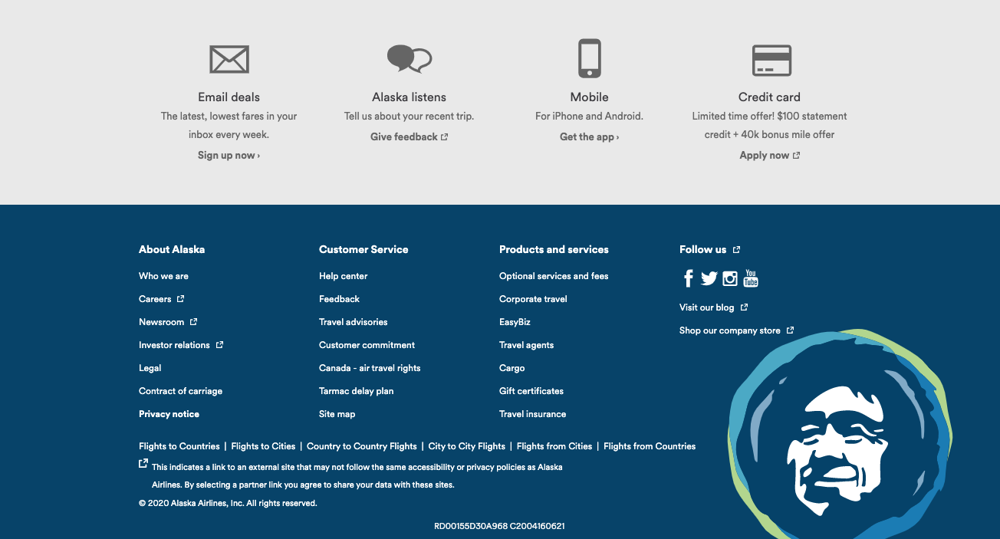
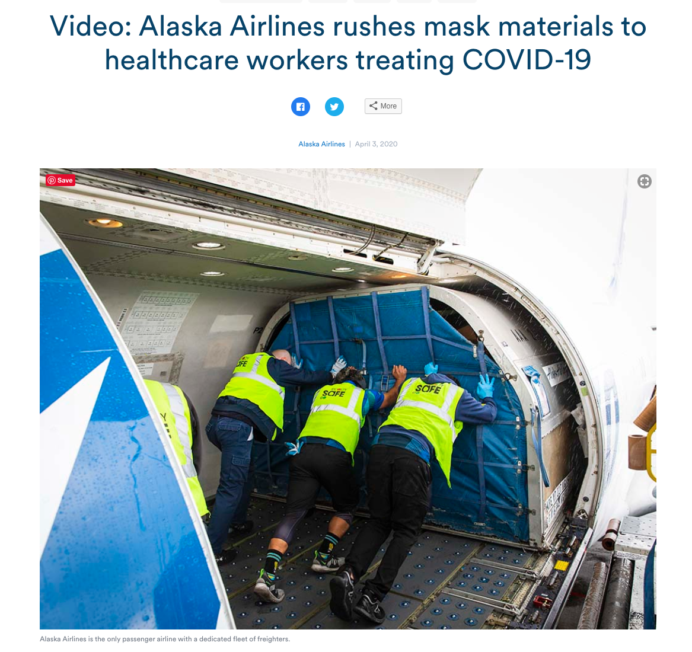
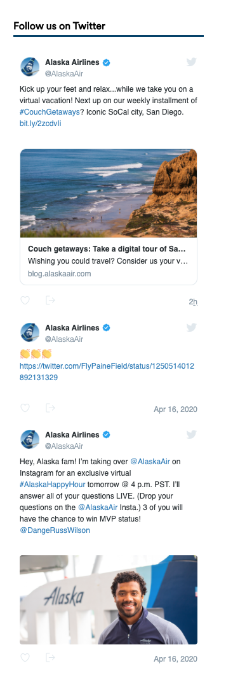
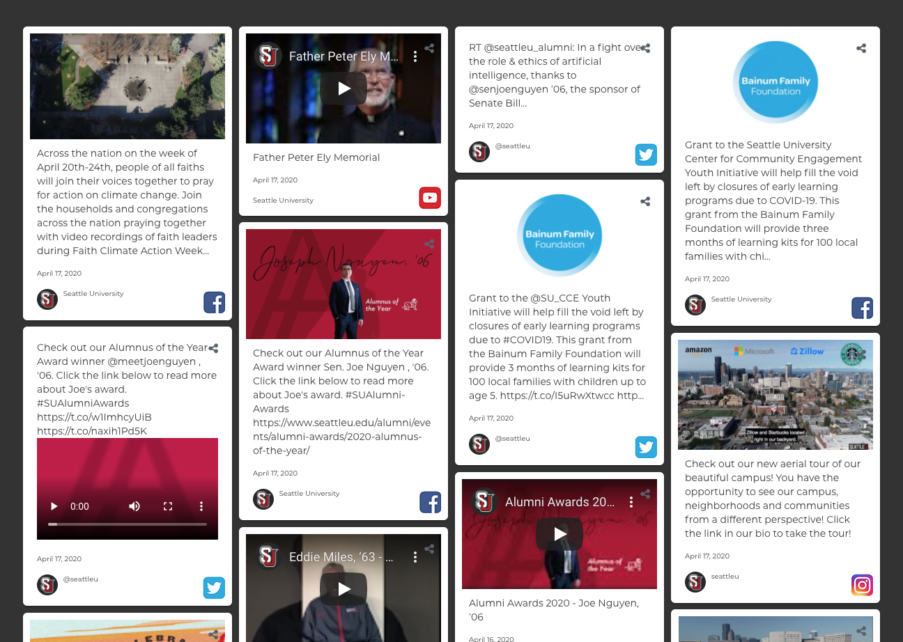

Airlines have loyal customers who frequently use their websites to book travel, and they have brand new prospects, who come to the page possibly because of a rumored deal. The major reason people go to airline websites is to book trips.
But like so many things today, airlines have been pummeled by COVID-19.
According to Bloomberg News, TSA reports that for one week in April 2019, 2 million travelers passed through security. For that same week in 2020, the number was 90,000, or a 95% drop in air travel.
Airline websites today need to serve two purposes: they need to be familiar places where a potential customer can research and book a trip for the distant future, but much more prominently, they need to be a place where a current customer can cancel or postpone a trip. On top of that, they need to reassure that they are sanitizing their flights, protecting their employees and if possible, playing a role in supporting health workers in the pandemic.
With these 2 purposes in mind, I decided to review Alaska Airlines, a site I have used regularly for booking trips, and recently, for canceling them.
Alaska Airlines and Canceled Travel
This blog is a user experience review of alaskaair.com and I will be analyzing their webpage.
I will use the following criteria from Steve Krug’s book “Don’t Make Me Think”.
- What site is this?
- What page am I on?
- What are the major sections?
- What are my options at this level?
- Where am I in relation to the rest of the site?
- How can I search?
What site is this?
Normally, the Alaska Airlines logo and sections would feature prominently across the top of the page, but during this time, Alaska has put key issues related to Covid-19 at the upper left, anchored by an Alaska Airlines logo. They have also put a large button to lead to the most important action that customers are doing on the site right now--changing or canceling flights. I think this works well--most companies are listing their COVID-19 info in a banner on the top, so this is a new convention that users are coming to expect.
What page am I on?
I am on the home page. I know this by the nav bar of sections and the prominent booking form. It’s not as stylized as it usually is, and the background image enticing you to travel is not that enticing! It’s pale and faded and features a crowded city of high rise apartments. It’s a strange choice at a time when crowded cities are not places people want to plan to travel to.
What are the major sections of this site?
Across the nav bar, you can choose to Book, Manage, Check In, Where We Fly, Traveling with Us, Mileage Plan and Search. When you click on those, you either get bold buttons for quick searches or dropdowns for more options. These features are common on airline sites.
What are my options at this level?
On the home page, you can just use the COVID-19 banner and take care of things there. You can scroll further down to the nav bar and do some research on other pages (like where they fly). You can book, check in, find out your flight status or manage a trip on the form. There is a big section devoted to learning more about what they are doing to stay safe.
There is also a big section reserved for getting an Alaska Airlines credit card. There is a section reserved for shopping with miles, learning about partnerships and earning miles. And then there is some boilerplate about newsletters, mobile apps, and how to contact them and social media. These latter sections seem very similar to other airlines reviewed, like United, Southwest and Delta.
Where am I?
The benefit of a product and company as knowable as Alaska Airlines means that it’s pretty easy to know where I am on the site. While they may have secondary things for me to explore (credit cards and mileage plans) the homesite offers me, front and center, what I come to airline webpages for--booking a trip (or now, canceling a trip.) And that is featured very prominently.
How can I search?
The search bar is found on the nav bar, in a darker form. It’s subtle, but because it follows conventions (upper right corner, magnifying glass) I have enough experience to know where to go to find it. Oddly, in the many years that I have been going to the site, I have never used the search tool, which suggests that the nav functions are very intuitive.
Criticisms
I have two minor criticisms of the site, given the time we are living in right now.
1) They are missing an opportunity to show their involvement in the fight to stop COVID-19. They have a blog that is very hard to find (in the footer next to social) that features them rushing materials to make masks to production lines in several states to be used across the western states. They also flew healthcare workers to New York. They could highlight a photo in their banner at the top to take you to those stories.
2) They are also missing out on some of their more interesting social media, a virtual trip to San Diego, or an invite to have a happy hour with Russell Wilson on the Alaska Airlines Instagram page. These kinds of features would be a lot more interesting than some of the boilerplate credit card and partner features but are hidden behind their tiny links to social.
Seattle U does a nice job of featuring their social media at the bottom of their home page.
Generally speaking, Alaska Airlines not only does a good job of usable design in their webpage when it’s “business as usual” but they have also been clear and direct with users who are now using the page in a way that has been much less common but in high demand now--canceling travel.
The suggestions I have for them aren’t about making it easier for the user to take care of that business, but to get some credit and build greater loyalty for the role they are playing in changing up their work to support front line workers as well as being creative in entertaining people who had to cancel travel. They deserve some credit.